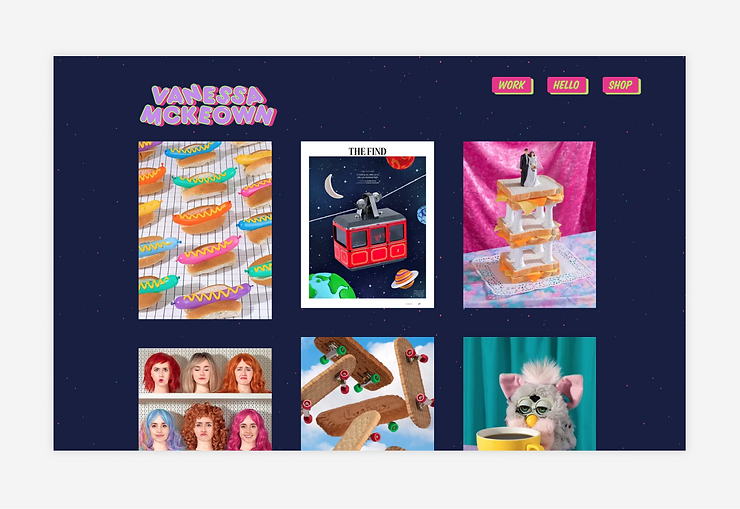
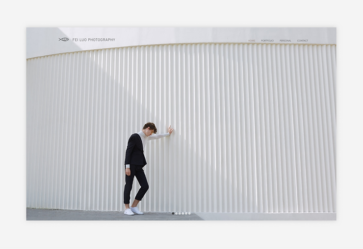
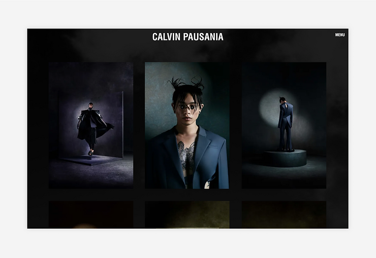

PHOTOGRAPHY PORTFOLIO

- Vanessa Mckeown
- Vanessa Mckeown uses her photography and art portfolio to show off her colorful work—and to sell it.
Her website is home to an eCommerce shop that sells several iconic prints. If the vibrant color
scheme doesn’t grab your attention, the hover-activated zoom animations that she applied to the
photos will. Another eye-catching animation feature that strengthens Vanessa’s brand: the campy
spinning star with moving dollar signs at the bottom of the shop’s page.

- Fei Luo Photography
- If you have a diverse portfolio, take inspiration from Fei Luo when organizing your site. Beneath the
fullscreen carousel that appears above the fold, Fei splits her portfolio into four categories:
landscape, fashion, dancers and shadow work. But Fei’s talents extend past photography. When hovering
over “Portfolio” in the top navigation, visitors can find pages showcasing Fei’s work in film,
advertising and more. By organizing her portfolio by industry, she can show off both the breadth and
depth of her expertise in different subject matters like fashion.

- Calvin Pausania
- Calvin Pausania skillfully uses a dark-mode theme (in which he pairs a dark background with contrasting
fonts) to make his photography portfolio stand out. While dark mode typically refers to a UX technique
for giving eyes a respite from bright screens, Calvin uses it to focus the viewer’s attention on the
images in the foreground and emphasize his sharp, futuristic style.Although the passing-clouds animation
could be distracting in another context, the dark overlay makes it melt into the background, allowing
Calvin’s captivating images to do all of the talking.